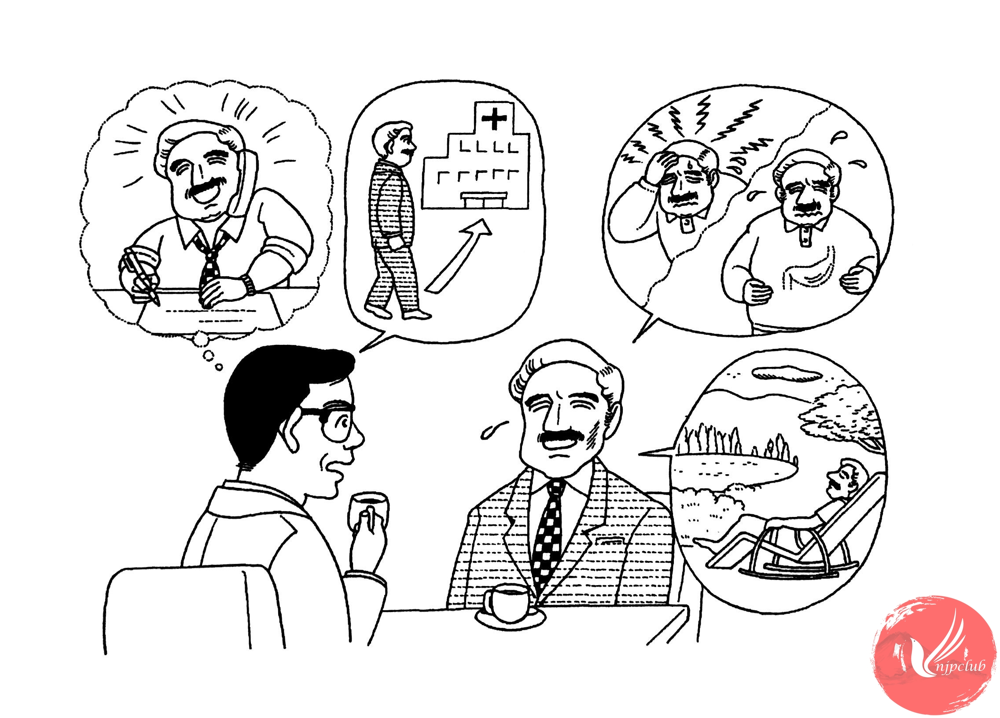

| 小川： |
シュミットさん、元気が ありませんね。どう したんですか。 |
| シュミット： |
最近 体の 調子が よくないんです。 |
|
時々 頭や 胃が 痛く なるんです。 |
|
| 小川： |
それは いけませんね。仕事が 忙しいんですか。 |
| シュミット： |
ええ。残業が 多いんです。 |
| 小川： |
ストレスかもしれません。 一度 病院で 診て もらった ほうが いいですよ。 |
| シュミット： |
ええ、そうですね。 |
| 小川： |
無理を しない ほうが いいですよ。 |
| シュミット： |
ええ、今の 仕事が 終わったら、休みを 取ろうと 思っています。
|
| 小川： |
それは いいですね。 |